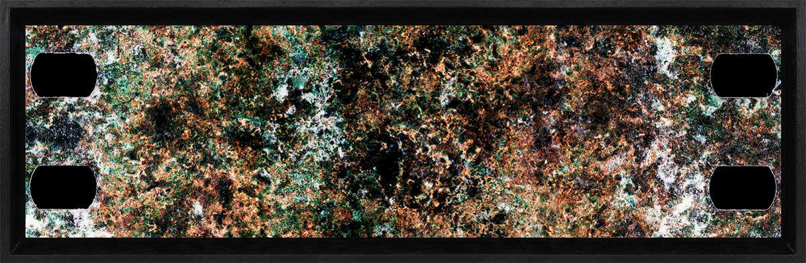

MEMORIAS DEL SAN PEDRO
Memorias del San Pedro es un proyecto que investiga la relación entre el mundo vegetal y las formas de producción y lectura de las imágenes. Esta primera colección surge de un proceso en el que se enterraron fragmentos de película fotográfica de 35mm en una matera donde crece el cactus andino San Pedro. Estas imágenes son el resultado de la reacción entre el soporte fotoquímico y la tierra y se presentan como la representación visual de la memoria ancestral que la planta nos entrega.
Este proyecto se presenta en la Feria Del Millón del 2021 en Bogotá: https://feriadelmillon.com/
Ficha técnica general para las fotografías
Titulo: Memoria del San Pedro
Dimensión: 105 X 32 cm (montada sobre marco negro flotante)
Año: 2021
Técnica: Película 35mm color y alteraciones químicas
Valor: $1.500.000
Impresión: digital en papel de algodón Hahnemühle photo rag metallic de 340gr
Seriado: 1/10
Las fotografías serán impresas y enmarcadas por el laboratorio profesional FanLab: http://fanlab.com.co/web/
SERIE NEGATIVOS





SERIE POSTIVOS